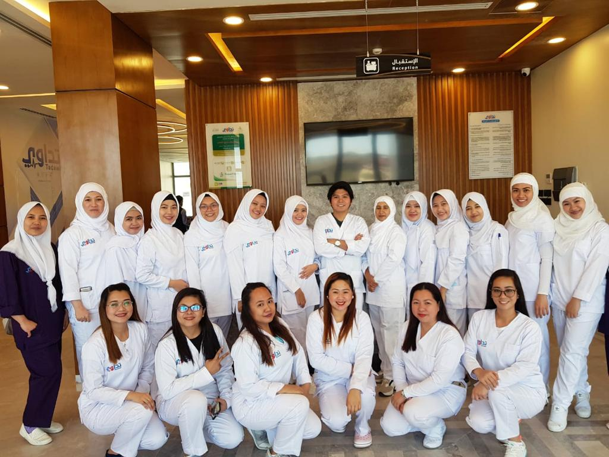

مقدمة
في السنوات الأخيرة صار البحث عن استقدام عمالة إندونيسية أمر متكرر في السعودية. كثير من الناس يتوجهون إلى محرك البحث بسؤال مثل "مكتب استقدام اندونيسيا بالرياض" أو "استقدام عاملات اندونيسيات"، وفي نفس الوقت ظهرت شركات كثيرة تستقدم عاملات منزليات.
نحن في شركة أمالندو لانقق لنا توجه مختلف؛ متخصصون في العمالة الفنية والرجالية فقط ونرفض تمامًا استقدام عاملات منزلية. نهتم بتوفير مهنيين للسوق السعودي في القطاعات التقنية والطبية والفندقية والمطاعم والسائقين المحترفين، ونغطي احتياجات الشركات وليس المنازل. هذه المقالة تعرّفك أكثر على خدماتنا وكيف تختلف عن "شغالات اندونيسيات بالشهر" المنتشرة في السوق.
من نحن ولماذا إندونيسيا؟
خبرة تمتد لأكثر من أربعة عقود
شركة أمالندو لانقق تعمل في مجال الاستقدام منذ عام ١٩٨٠ وتملك خبرة تزيد على ٤٥ عامًا في هذا المجال. خبرتنا الطويلة عطتنا قدرة على اختيار أفضل الكفاءات والتعامل مع اللوائح السعودية والخليجية بكل احترافية. رقم ترخيصنا في السفارة السعودية هو رقم ١٢، وهذا يعكس التزامنا بالقوانين ومعايير الجودة في الاستقدام.
تخصصنا في العمالة الفنية
يتميّز مكتبنا بتركيزه على العمالة الفنية والرجالية بجميع أنواعها. يعني لما تبحث عن "استقدام اندونيسيا" أو "استقدام سائقين اندونيسيين"، نحن نوفر لك عمالة مدربة للقطاعات التالية:
- قطاع المطاعم والفنادق: نوفر طهاة، مساعدين، نُدُل، وعمال خدمة مدربين على أعلى مستوى للعمل في الفنادق والمطاعم. يمكن للشركات الحصول على عمال بشكل شهري أو بعقود طويلة بدون الدخول في متاهة "عاملات بالساعة" أو "شغالة اندونيسية".
- القطاع الطبي: نمتلك كوادر من الأطباء والممرضين والممرضات والفنيين الصحيين. يتم تدريبهم على الأنظمة السعودية ولغة التعامل مع المرضى.
- العمالة الفنية لقطاع المقاولات: تشمل الفنيين والنجارين والحدادين وعمال المصانع، ويتم اختبارهم عمليًا قبل إرسالهم.
- السائقين المحترفين: نوفر سائقين إندونيسيين مرخصين للعمل مع الشركات ومكاتب السياحة ونقل الموظفين. كثير من العملاء يبحثون عن "سائق بالشهر" أو "تأجير سائقين"، وحنا نوفر خدمة تأجير السائقين بعقود مرنة.

لماذا لا نوفر عاملات منزليات؟
معظم محركات البحث تمتلئ بعبارات مثل "تأشيرة عاملة منزلية"، "طريقة استخراج فيزا عاملة منزلية"، أو "شغالات اندونيسيات بالشهر في الدمام". أغلب مكاتب الاستقدام تركز على هذا النوع من العمالة، ولكننا اخترنا مسار مختلف للأسباب التالية:
- التخصص والاحترافية: هدفنا هو تزويد الشركات بمواهب مدرَّبة ومؤهَّلة للعمل في بيئات احترافية مثل الفنادق والمستشفيات وليس توفير خدم للمنازل. لدينا برامج تدريب متخصصة في التخصصات، العادات، التقاليد، واللغة العربية، وهذا يضمن سرعة اندماج العمالة في بيئات العمل الرسمية.
- القوانين واللوائح: وزارة الموارد البشرية والتنمية الاجتماعية بالمملكة وضعت شروط صارمة لاستقدام العاملات المنزليات، وتختلف شروط استقدام عامل منزلي عن استقدام عامل فني أو طبي. لذلك نترك هذا المجال لمكاتب متخصصة فيه. للمزيد من المعلومات يمكنك زيارة موقع الوزارة.
- الجودة والسمعة: خبرتنا جعلتنا نركز على الجودة والخدمة الاحترافية للشركات. توفير عاملات منزليات قد يؤثر على سمعة المكتب ويشتت جهودنا. بالتالي لن تجد عندنا "عاملات بالساعة" ولا "خادمات اندونيسيات" أو "عاملة منزلية بالساعة"، لكنها ستجد عمالة فنية محترفة تناسب المطاعم، الفنادق، الشركات، والمستشفيات.
برامج التدريب والتأهيل
تدريب على التخصصات
قبل إرسال أي عامل أو فني إلى السعودية، يقضي فترة تدريب مكثفة في إندونيسيا. البرامج تشمل تطوير المهارات المهنية المطلوبة في الفنادق والمطاعم أو المستشفيات. مثلاً، الطهاة يتعلمون فنون الطهي العالمية إضافة إلى الأطباق السعودية والخليجية، بينما يتلقى الفنيون الصحيون تدريبًا في الإسعافات الأولية والتعامل مع الأجهزة الطبية الحديثة.
تدريب على العادات والتقاليد
يتعلم العمال اللغة العربية الأساسية والعادات والتقاليد الخليجية. هذا يسهّل التواصل مع الزبائن والزملاء ويعزز احترام القيم المحلية. نعلمهم كيف يتعاملون مع العملاء السعوديين بطريقة ودودة، وكيف يلبسون وفق العرف السائد في المطاعم والفنادق.
اختبارات عملية قبل التعاقد
في حالة العمالة الفنية لشركات المقاولات، نخضع العمال لاختبارات عملية ويتم عرض نتائج الاختبار على العميل قبل التعاقد. هذا يسمح للشركات باختيار أفضل المرشحين ويضمن أن العامل يمتلك مهاراته بالفعل.
خطوات الاستقدام عبر مكتب أمالندو لانقق
لو كنت صاحب شركة أو مطعم أو فندق وتبحث عن "طريقة استقدام عمال إندونيسيين"، فإليك خطوات بسيطة للعمل معنا:
- التواصل المبدئي: تواصل معنا عبر البريد الإلكتروني أو واتساب. حدّد نوع العمالة التي تحتاجها (سائقين، طهاة، فنيين، أطباء… إلخ).
- تحديد المتطلبات: فريقنا يفهم احتياجاتك من حيث العدد والمهارات. نُحضِّر قائمة بالمرشحين المناسبين ونرسل لك سيرهم الذاتية.
- الاختيار والمقابلات: يمكن إجراء مقابلات عبر الاتصال المرئي أو زيارة معسكر التدريب في إندونيسيا للاطلاع على أداء العمال عمليًا.
- إعداد الأوراق والتأشيرات: نقوم بإصدار التأشيرات وتصديق العقود عبر القنوات الرسمية. بحكم خبرتنا الطويلة، ننجز الإجراءات بسرعة وبشفافية، ونلتزم بشروط الاستقدام المعمول بها في السعودية.
- الاستقبال والتوجيه: عند وصول العمال إلى المملكة، نستقبلهم ونتأكد من توجيههم للمنشأة الصحيحة وتقديم الدعم حتى يباشروا أعمالهم.
أسئلة شائعة
كم تستغرق عملية استقدام العمالة؟
مدة الاستقدام تختلف حسب نوع العمالة وعددها. عادةً ما تتراوح بين ٤ إلى ٨ أسابيع ابتداءً من تقديم الطلب وحتى وصول العمال. خبرتنا وعلاقاتنا مع الجهات الحكومية تساهم في تسريع الإجراءات.
ما الفرق بين مكتبكم وبين مكاتب "تأجير عاملات"؟
المكاتب الأخرى تركز على استقدام عاملات منزليات وتقدم خدمات مثل "عاملات بالساعة" أو "عاملات بالشهر"، بينما نحن متخصصون في العمالة الفنية والمهنية فقط. لن تجد لدينا "مكتب تأجير عاملات" وإنما ستجد طاقم مدرب للعمل في الفنادق، المطاعم، المستشفيات، وشركات المقاولات.
هل توفرون عقود قصيرة الأجل مثل "سائق خاص بالشهر"؟
نعم، بعض الشركات تحتاج إلى سائق بالشهر أو تأجير سائقين لفترة مؤقتة. نقدم عقودًا مرنة تناسب احتياجاتهم، مع التأكد من أن السائق يحمل رخصة قيادة سارية وخبرة في طرق المملكة.
ماذا عن تكاليف الاستقدام؟
التكلفة تعتمد على نوع العمالة وعدد الأشخاص والقطاع. عمومًا، تكلفة استقدام عامل فني أو طباخ تختلف عن تكلفة استقدام طبيب أو ممرض. رغم ذلك، نقدم أسعارًا تنافسية ونوضح جميع الرسوم مقدمًا، ولا نضيف أية تكاليف مخفية. الأسعار لدينا قد تكون أعلى من "تكلفة استقدام عاملة إندونيسية" بسبب مستوى التدريب والشهادات المطلوبة، لكنك ستضمن جودة الخدمة.
تواصل معنا
إذا كنت تبحث عن أفضل مكتب استقدام من إندونيسيا في الرياض أو في أي مدينة سعودية أخرى لتلبية احتياجات شركتك، فنحن في أمالندو لانقق جاهزون لخدمتك.
تواصل عبر واتسابخلاصة
الطلب المتزايد على العمالة الإندونيسية في السعودية جعل الكثير يبحث عن "مكاتب استقدام من اندونيسيا" و"استقدام اندونيسيا" أو حتى "استقدام عاملات اندونيسيات". نحن نؤكد أننا لا نوفر عاملات منزليات، بل نخدم القطاعات الحيوية في المملكة من خلال عمالة فنية وطبية وفندقية متميزة. خبرتنا الطويلة وبرامجنا التدريبية المتخصصة تجعلنا الخيار الأمثل لكل منشأة تبحث عن الجودة والكفاءة.
لزيارة صفحتنا الرئيسية يمكنك النقر على الرئيسية أو تصفح جميع المقالات. كذلك اطلع على مقالنا التفصيلي عن شروط استقدام العمالة من إندونيسيا إلى السعودية ٢٠٢٦.